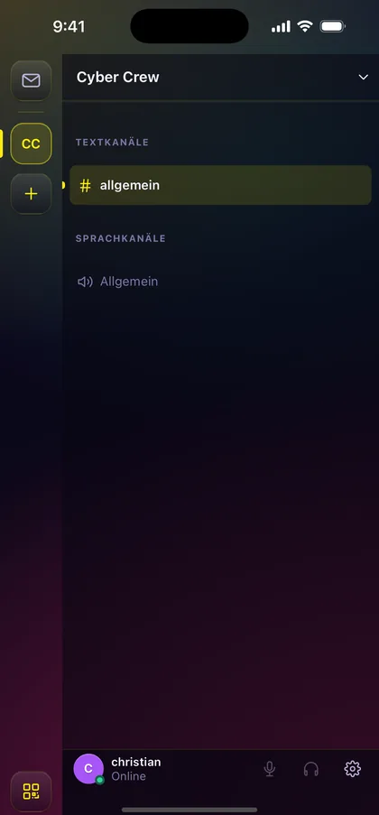
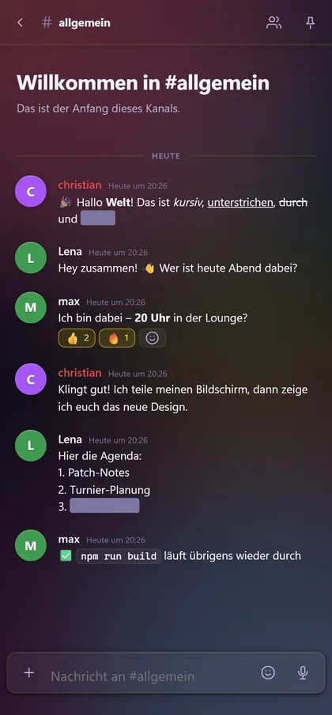
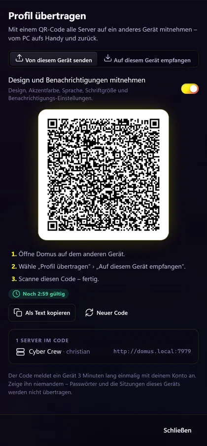

Domus – lateinisch „Zuhause“ – ist die kostenlose, quelloffene Alternative zu Discord: Text, Sprache, Video und Bildschirm teilen auf einem Server, der dir gehört. Per Klick in der App gestartet. Keine Cloud, keine Werbung, kein Tracking.
18,4 GB? Kein Problem.Direktversand ohne Upload-Limit
Eine App für alle deine Geräte
Windows
macOS
Android
iPhone & iPad
Linux-Server
Auf einen Blick
Was ist Domus?
Domus ist eine kostenlose, selbst hostbare Kommunikations-App für Freundeskreise, Gaming-Gruppen, Vereine und kleine Teams. Sie vereint Text-Chat, Sprach- und Videoanrufe, Bildschirmübertragung und Direktnachrichten – wie Discord, aber der Server läuft auf deinem eigenen Rechner. Nachrichten und Konten bleiben bei dir, nicht in der Cloud eines Konzerns.
Zusammen am selben Bildschirm – als würdet ihr nebeneinandersitzen
Sechs Funktionen, die es so bei Discord nicht gibt. Alles läuft direkt zwischen euren Rechnern; der Server vermittelt nur.
01 · Fernsteuerung
Hilf am fremden PC – mit einer einzigen Taste
Wer seinen ganzen Bildschirm teilt, kann die Steuerung freigeben. Du übernimmst Maus und Tastatur, als säßest du davor – und springst mit F8 jederzeit zurück an deinen eigenen PC.
F8 wechselt zwischen deinem PC und dem Stream – auch wenn ein anderes Programm im Vordergrund ist
Passwort optional – ohne Passwort bestätigt der Gastgeber jede Anfrage selbst
Tasten kommen als echte Hardware-Tasten an, die Maus landet pixelgenau
Spielmodus mit relativer Maus, Controller-Unterstützung, Menü für Alt+Tab
Ehrlich: automatisch geprüft auf einem PC inklusive echter Zeigerbewegung – zwischen zwei getrennten Rechnern noch nicht im Testlabor gelaufen. Nur unter Windows.
Jeder im Anruf kann direkt auf einem Stream einkreisen, unterstreichen und mit dem Laserpointer zeigen. Alle sehen es sofort – beim Teilenden erscheinen die Markierungen sogar auf dem eigenen Desktop.
Stift in sechs Farben, Striche verblassen nach ein paar Sekunden
Laserpointer mit Namensschild – man sieht, wer gerade zeigt
Durchsichtiges Overlay auf dem echten Bildschirm, ohne Doppelbild im Stream
Wer nicht bemalt werden möchte, schaltet es mit einem Klick ab
Große Dateien gehen ohne Umweg von Rechner zu Rechner – verschlüsselt, ohne Upload auf den Server und ohne dessen Limit. Egal ob 50 MB oder 50 GB.
Wird in Direktnachrichten angeboten, sobald eine Datei zu groß für den Server ist
Der Empfänger nimmt an und wählt den Speicherort – erst dann fließen Daten
Fortschritt, Tempo und Restzeit live; jederzeit abbrechbar
Der Server speichert nichts davon
Ehrlich: Beide müssen währenddessen online sein. Getestet mit kleineren Dateien samt Prüfsumme – Übertragungen im zweistelligen GB-Bereich sind noch nicht gemessen.
Ein Klick auf das Schloss, und eure Direktnachrichten sind Ende-zu-Ende verschlüsselt. Der Schlüssel bleibt auf deinem Gerät – der Server sieht nur Zeichensalat.
Pro Unterhaltung einschaltbar, die Gegenseite zieht automatisch mit
Sicherheitsnummer zum Vergleichen, Warnung bei Schlüsselwechsel
Schlüsselsicherung mit Kennwort für ein neues Gerät
Moderne Standards: ECDH P-256 und AES-256-GCM
Ehrlich: Anhänge, Umfragen und Metadaten sind nicht verschlüsselt, die Schlüssel sind langlebig (keine „Forward Secrecy“) und die Kryptografie wurde nicht extern geprüft.
YouTube-Link einfügen, und alle im Sprachkanal schauen synchron – jeder spielt das Video selbst ab, in voller Qualität. Pause und Spulen gelten für alle.
Wer später dazukommt, steigt an der richtigen Stelle ein
Auch direkte Video-Adressen (https://…) funktionieren
Eigene Videodatei? Wird als Stream für alle abgespielt
Ehrlich: Eine lokale Datei wird wie eine Bildschirmübertragung gesendet, also neu komprimiert. Bei YouTube sieht der Anbieter die IP-Adresse jedes Zuschauers.
Alles, was eine Gruppe braucht – nichts, was sie ausspioniert
Für Freundeskreise, Gaming-Clans, Vereine und kleine Teams, die ihre Gespräche selbst in der Hand behalten wollen.
Sprache & Video
Sprachkanäle und Direktanrufe mit Opus, automatischer Eingabeempfindlichkeit und Rauschunterdrückung. Reaktionen und Hand heben im Anruf, Push-to-talk – auch global im Hintergrund.
Kanäle, Antworten, Reaktionen, Umfragen, Weiterleiten, Markdown, Spoiler, Sprachnachrichten mit Wellenform und Volltextsuche.
Eigene Server per Klick
Der Server steckt in der App – auch mehrere gleichzeitig, jeder mit eigenem dauerhaften Einladungslink. Sie starten automatisch mit.
Sicher ab Werk
TLS-Verschlüsselung, Zertifikatsprüfung per Fingerabdruck, Argon2-Passwörter, Rate-Limits, Audit-Log und Registrierung nur mit Einladung.
Rollen & Moderation
Rechte pro Rolle und Kanal, Auszeit, Kicken, Bann, im Sprachkanal stummschalten oder verschieben – per Rechtsklick auf die Person.
Federleicht
Rust und Tauri statt Electron: winziger Installer, Start in unter einer Sekunde, der Server braucht im Leerlauf rund 14 MB RAM.
Internet ohne Router-Frust
Freunde außerhalb deines WLANs bekommen einen Internet-Link über einen verschlüsselten Tunnel – auch bei Starlink oder DS-Lite.
Läuft auch ohne Internet
Im Heimnetz, auf der LAN-Party oder im Vereinsheim: Domus braucht keine fremden Server, um zu funktionieren.
Durchdacht im Alltag
Soundboard mit 36 Sounds, Profil-Banner, private Notizen, Schnellwechsler (Strg+K), Freunde, Autostart und Tray.
Android & iPhone
Dein Zuhause in der Hosentasche
Eine eigene Oberfläche für den Daumen statt einer gequetschten Desktop-Ansicht: Text, Sprache, Video, verschlüsselte Direktnachrichten, Soundboard und Umfragen. Seit 1.0.2 wird das Android-Handy sogar selbst zum Server.
Profil per QR-Code mitnehmenAm PC „Profil übertragen“, mit dem Handy scannen – alle Server sind da. Ohne Passwort: Jeder Code gilt 3 Minuten und nur einmal.
Server hosten am Android-HandyNEUDieselbe Hosting-Zentrale wie am PC; ein Hintergrunddienst hält den Server am Laufen.
Bildschirm teilen vom Android-HandyNEUÜber den Freigabedialog von Android geht dein Handybildschirm in den Anruf.
iPhone- und iPad-AppNEUDerselbe Client ab iOS 15 – mit Rücksicht auf Dynamic Island und Home-Balken.
Geräte im BlickEinstellungen › Geräte zeigt, wo du angemeldet bist – ein verlorenes Handy meldest du vom PC aus ab.
Android 8+ · iOS 15+ (Installation per AltStore oder Sideloadly). Das iPhone ist reiner Client, weil iOS Apps im Hintergrund beendet. Ehrlich: Server hosten und Bildschirm teilen am Android-Handy sind neu und noch nicht auf echten Handys getestet; die iPhone-App lief bisher im iPhone-Simulator.

iPhone

Android

QR-Übertragung
Neu in 1.0.2
Chats aufräumen, Ruhe finden
Neben Mac, iPhone und dem Server am Android-Handy bringt Version 1.0.2 vier kleine Dinge, die man nicht mehr missen will.
Chats archivieren & anheften
Unterhaltungen ins Archiv schieben oder oben anheften – lange drücken bzw. Rechtsklick.
Chat löschen – nur für dich
Der Verlauf verschwindet bei dir, die andere Person behält ihn. Dazu ein Suchfeld für viele Chats.
Lesebestätigungen
„Zugestellt“ → „Gelesen“ in Direktnachrichten – nur wenn beide sie eingeschaltet haben.
Ruhezeiten & Status mit Ablauf
Täglich z. B. 22–7 Uhr ohne Benachrichtigungen; ein Status, der nach 30 Minuten bis einer Woche verschwindet.
Selbst hosten
In drei Schritten zum eigenen Server
Kein Terminal, keine Konfigurationsdateien – es sei denn, du willst.
Server erstellen
Domus installieren, die Server-Schaltfläche unten links anklicken, Namen eingeben, „Erstellen & starten“. Ports, Verschlüsselung und Autostart sind voreingestellt.
Besitzer werden
Passwort für dein Inhaberkonto festlegen. Bei „Freunde einladen“ gibt Domus die Windows-Firewall frei und erstellt einen Internet-Link – auch ohne öffentliche IP und ohne Router-Einstellungen.
Link teilen
Den dauerhaften Einladungslink kopieren und verschicken. Ab jetzt startet dein Server von selbst, sobald du Domus öffnest – abschaltbar in den Einstellungen.
Profis nutzen den Headless-Server domus-server mit server.toml – ideal für einen dauerhaft laufenden Rechner oder vServer, unter Windows oder (aus dem Quellcode gebaut) unter Linux.
Vergleich
Domus oder Discord?
Discord ist ein großartiger Dienst – aber ein Dienst. Bei Domus gehört die Plattform dir.
Probier sie hier aus. Farbe markiert, was wichtig ist – der Rest hält sich zurück. Dazu eine eigene Akzentfarbe und auf Wunsch der automatische Wechsel zwischen Hell und Dunkel.
Ein Klick auf die kleine Landesflagge unten rechts in der App – sofort umgestellt, inklusive Rechts-nach-links für Arabisch.
Download · Version 1.0.2
Hol dir Domus – kostenlos
Am PC ist alles in einem Installer: Client und eingebauter Server. Ohne Werbung, ohne Konto bei Dritten. Updates installierst du einfach über die vorhandene Version – Server, Konten und Einstellungen bleiben erhalten.
Installer starten und den Schritten folgen. Der Installer ist (noch) nicht code-signiert: Zeigt Windows SmartScreen einen Hinweis, auf „Weitere Informationen“ und dann „Trotzdem ausführen“ klicken. Datei prüfen: PowerShell im Download-Ordner öffnen und Get-FileHash .\Domus_1.0.2_x64-setup.exe eingeben – der Wert muss mit der Prüfsumme oben übereinstimmen. Microsoft WebView2 ist in Windows 11 enthalten und unter Windows 10 meist vorinstalliert.
Installation auf dem Mac
.dmg öffnen und Domus in „Programme“ ziehen. Die App ist nicht von Apple notarisiert: Beim ersten Start meldet macOS, dass sie nicht überprüft werden kann. Dann unter Systemeinstellungen › Datenschutz & Sicherheit „Dennoch öffnen“ wählen (bis macOS 14 genügt Rechtsklick auf Domus › „Öffnen“).
Installation auf Android
APK herunterladen und öffnen. Android fragt beim ersten Mal, ob der Browser Apps installieren darf („Unbekannte Apps installieren“). Das APK ist mit einem eigenen Schlüssel signiert; ein Update installierst du einfach über die vorhandene App.
Installation auf iPhone & iPad
Apple erlaubt Apps außerhalb des App Stores nur mit Signatur. Die .ipa mit Sideloadly oder AltStore und deiner eigenen Apple-ID aufs Gerät bringen, dann unter Einstellungen › Allgemein › VPN & Geräteverwaltung vertrauen. Ab iOS 16 zusätzlich den Entwicklermodus einschalten.
Mit einer kostenlosen Apple-ID gilt die Signatur 7 Tage; AltStore und Sideloadly erneuern sie automatisch. Daten und Server bleiben dabei erhalten.
Systemvoraussetzungen & Testlage
Für einen eigenen Server: freie Ports TCP 7878 und UDP 3478 (plus Relay-Bereich) – oder einfach den eingebauten Internet-Link nutzen. Mikrofon und Kamera sind optional.
Ehrlich: Mac- und iPhone-App sind neu in 1.0.2. Sie wurden auf Apple-Rechnern bei GitHub gebaut und dort getestet (Mac: alle automatischen Tests; iPhone: Start und Anmeldung im Simulator), aber noch nicht auf einem echten Mac oder iPhone ausprobiert.
Domus unterstützen
Domus ist kostenlos und werbefrei – und soll es bleiben. Wenn dir die App gefällt, freue ich mich über eine kleine Spende per PayPal an .
Domus ist eine kostenlose, quelloffene Kommunikations-App mit Text-Chat, Sprach- und Videoanrufen, Bildschirmübertragung und Direktnachrichten – eine selbst hostbare Alternative zu Discord. Der Server läuft auf deinem eigenen Rechner oder Server statt in einer fremden Cloud. Domus gibt es für Windows, macOS, Android und iPhone/iPad.
Ist Domus wirklich kostenlos?
Ja. Keine Abos, keine Premium-Stufen, keine Werbung. Der Quellcode steht unter der MIT-Lizenz auf GitHub. Freiwillige Spenden helfen bei der Weiterentwicklung.
Brauche ich einen eigenen Server?
Nein – du kannst dich auch mit dem Server eines Freundes verbinden. Wer selbst hosten möchte, startet den Server direkt in der App; ein separater Rechner ist nicht nötig. Alle eigenen Server starten auf Wunsch automatisch mit Domus.
Gibt es Domus fürs Handy, für Mac oder Linux?
Ja: für Windows, macOS (ab 11, Apple Silicon und Intel), Android (ab 8, als APK) und seit 1.0.2 auch fürs iPhone und iPad (ab iOS 15, per Sideloading mit AltStore oder Sideloadly). Mit „Profil übertragen“ nimmst du per QR-Code alle Server vom PC mit – und umgekehrt.
Am Android-Handy kannst du seit 1.0.2 auch einen Server hosten und deinen Bildschirm teilen; das iPhone ist reiner Client, weil iOS Apps im Hintergrund beendet. Fernsteuerung und Zeichnen auf dem eigenen Bildschirm gibt es nur unter Windows. Der Headless-Server läuft auch unter Linux (aus dem Quellcode); einen Linux-Client gibt es noch nicht.
Können sich Freunde über das Internet verbinden?
Ja – ohne Router-Einstellungen. Bei „Freunde einladen“ baut Domus automatisch einen verschlüsselten Tunnel über das kostenlose öffentliche Relay bore.pub auf und zeigt einen Internet-Link, der für alle funktioniert. Das klappt auch bei Anschlüssen ohne eigene öffentliche IPv4 wie Starlink oder DS-Lite. Das Relay ist ein Dienst eines Dritten ohne Verfügbarkeitsgarantie; der Tunnel lässt sich im Verbindungs-Check abschalten.
Warum kann sich niemand verbinden?
Fast immer ist es die Windows-Firewall auf dem Server-PC. Öffne in Domus „Server hosten“: Der Verbindungs-Check zeigt, was fehlt, und „Firewall freigeben“ erledigt es mit einer Windows-Bestätigung. Zusätzlich muss der Server laufen und auf „Freunde einladen“ stehen. Freunde außerhalb deines WLANs brauchen den Internet-Link, nicht den Heimnetz-Link.
Wie sicher ist die Fernsteuerung?
Sie funktioniert nur, solange du deinen ganzen Bildschirm teilst und sie ausdrücklich eingeschaltet hast. Entweder verlangst du ein Passwort (fünf Fehlversuche sperren fünf Minuten) oder du bestätigst jede Anfrage einzeln. Während jemand steuert, siehst du einen deutlichen Hinweis und beendest alles sofort mit F8. Trotzdem gilt: Wer steuert, kann deinen PC bedienen – gib die Steuerung nur an Menschen, denen du vertraust.
Was bedeutet „Ende-zu-Ende-verschlüsselt“ bei Domus genau?
Für eingeschaltete Direktnachrichten wird der Text auf deinem Gerät verschlüsselt und erst beim Empfänger wieder entschlüsselt; der Server speichert nur das Chiffrat. Nicht verschlüsselt sind Anhänge, Umfragen, Reaktionen und Metadaten (wer wann mit wem schreibt). Kanalnachrichten sind per TLS auf dem Weg geschützt, liegen auf dem Server aber lesbar. Die Schlüssel sind langlebig, und die Umsetzung wurde nicht von Externen geprüft.
Wie groß dürfen Dateien sein?
Für Uploads in Kanäle gilt das Limit des jeweiligen Servers (vom Betreiber einstellbar). In Direktnachrichten gibt es zusätzlich den Direktversand: Die Datei geht ohne Größenlimit direkt von deinem Rechner zum Empfänger, solange ihr beide online seid.
Wie viele Personen passen in einen Sprachkanal?
Teilnehmer werden direkt miteinander verbunden. Mit Video sind etwa 8 Personen pro Kanal empfehlenswert, nur mit Sprache auch mehr – abhängig von Bandbreite und Rechner.
Warum warnen Windows oder macOS beim ersten Start?
Domus ist (noch) nicht mit einem kostenpflichtigen Zertifikat signiert bzw. nicht von Apple notarisiert. Deshalb zeigt Windows SmartScreen einen Hinweis und macOS fragt beim ersten Start nach. Die Anleitung steht oben im Download-Bereich; mit der SHA-256-Prüfsumme kannst du sicherstellen, dass die Datei unverändert ist.
Wie sicher ist die Übertragung per QR-Code?
Der QR-Code enthält kein Passwort und keine Sitzung, sondern pro Server einen Einmal-Code, der 3 Minuten gilt und nur einmal funktioniert. Das neue Gerät bekommt damit eine eigene Anmeldung, die du unter Einstellungen › Geräte jederzeit einzeln abmelden kannst. Zeig den Code nur dir selbst.
Hieß Domus früher anders?
Ja – von Version 0.8 bis 0.10 hieß die App NexUs, davor NexusTalk. Der Domus-Installer ersetzt die alte Version automatisch: Server, Konten, Chats und Einstellungen bleiben erhalten. Einladungslinks beginnen jetzt mit domus://; alte nexustalk://-Links funktionieren weiter.
Hol dir dein Zuhause zurück.
Ein Klick, ein eigener Server, deine Regeln. Kostenlos und quelloffen – für Windows, Mac, Android und iPhone.